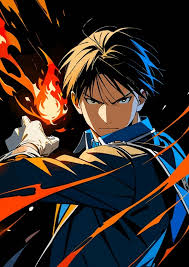

Colonel Roy Mustang
About
Roy Mustang, also known as the Flame Alchemist, is a key character in the anime and manga series *Fullmetal Alchemist*. A brilliant tactician and skilled alchemist, he commands the ability to manipulate fire using flame alchemy. Despite his stoic demeanor, he deeply cares for his subordinates and strives to protect the people under his command.
Abilities
- Flame Alchemy: Controlling fire with precision.
- Strategic Thinking: An excellent leader and tactician.
- Marksmanship: Skilled in firearms.
Notable Quotes
"Nothing’s perfect, the world’s not perfect, but it’s there for us trying the best it can; that’s what makes it so damn beautiful."